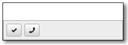

Gtk.ActionBar¶
Example¶

- Subclasses:
None
Methods¶
- Inherited:
Gtk.Bin (1), Gtk.Container (35), Gtk.Widget (278), GObject.Object (37), Gtk.Buildable (10)
- Structs:
Gtk.ContainerClass (5), Gtk.WidgetClass (12), GObject.ObjectClass (5)
class |
|
|
|
|
|
|
Virtual Methods¶
Properties¶
- Inherited:
Child Properties¶
Name |
Type |
Default |
Flags |
Short Description |
|---|---|---|---|---|
|
r/w |
A |
||
|
|
r/w |
The index of the child in the parent |
Style Properties¶
- Inherited:
Signals¶
- Inherited:
Fields¶
- Inherited:
Name |
Type |
Access |
Description |
|---|---|---|---|
bin |
r |
Class Details¶
- class Gtk.ActionBar(**kwargs)¶
- Bases:
- Abstract:
No
- Structure:
Gtk.ActionBaris designed to present contextual actions. It is expected to be displayed below the content and expand horizontally to fill the area.It allows placing children at the start or the end. In addition, it contains an internal centered box which is centered with respect to the full width of the box, even if the children at either side take up different amounts of space.
- CSS nodes
Gtk.ActionBarhas a single CSS node with name actionbar.- classmethod new()[source]¶
- Returns:
a new
Gtk.ActionBar- Return type:
Creates a new
Gtk.ActionBarwidget.New in version 3.12.
- get_center_widget()[source]¶
- Returns:
the center
Gtk.WidgetorNone.- Return type:
Gtk.WidgetorNone
Retrieves the center bar widget of the bar.
New in version 3.12.
- pack_end(child)[source]¶
- Parameters:
child (
Gtk.Widget) – theGtk.Widgetto be added to self
Adds child to self, packed with reference to the end of the self.
New in version 3.12.
- pack_start(child)[source]¶
- Parameters:
child (
Gtk.Widget) – theGtk.Widgetto be added to self
Adds child to self, packed with reference to the start of the self.
New in version 3.12.
- set_center_widget(center_widget)[source]¶
- Parameters:
center_widget (
Gtk.WidgetorNone) – a widget to use for the center
Sets the center widget for the
Gtk.ActionBar.New in version 3.12.